Conoce las características principales de cada signo.
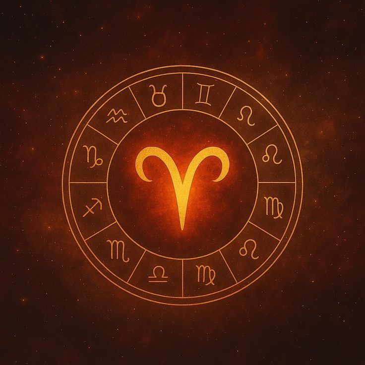
Aries es un signo de fuego que se caracteriza por su energía, valentía y entusiasmo. Le gusta enfrentar retos y tomar la iniciativa.
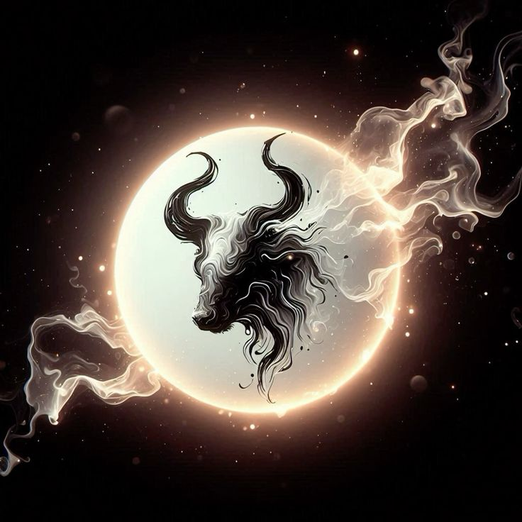
Tauro es un signo de tierra que representa la paciencia, la estabilidad y la perseverancia. Valora la seguridad y la tranquilidad.
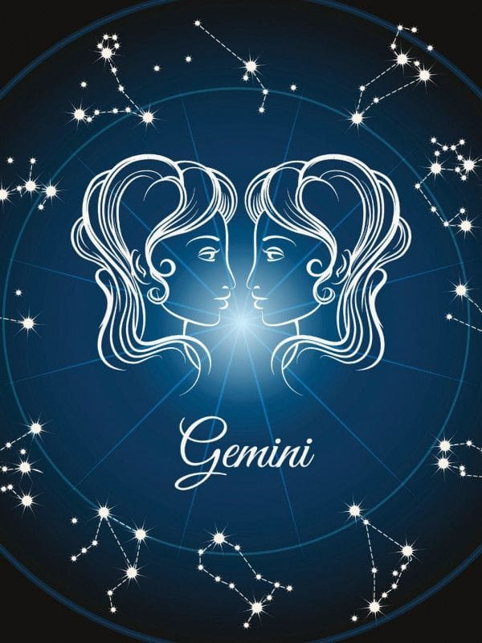
Géminis es un signo de aire relacionado con la comunicación y la curiosidad. Disfruta aprender cosas nuevas y convivir con otras personas.
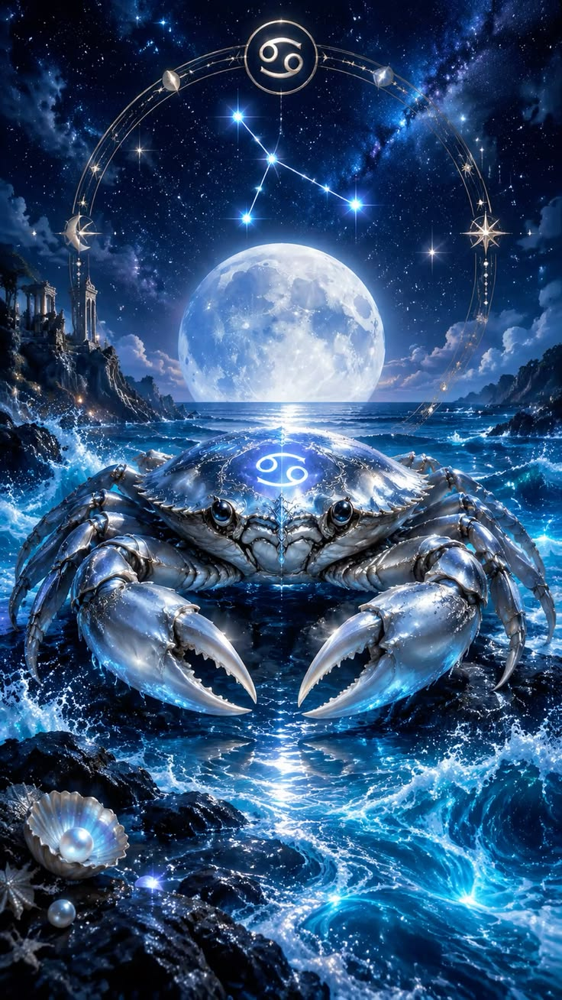
Cáncer es un signo de agua que destaca por su sensibilidad y cariño. Valora mucho a su familia y protege a las personas que ama.
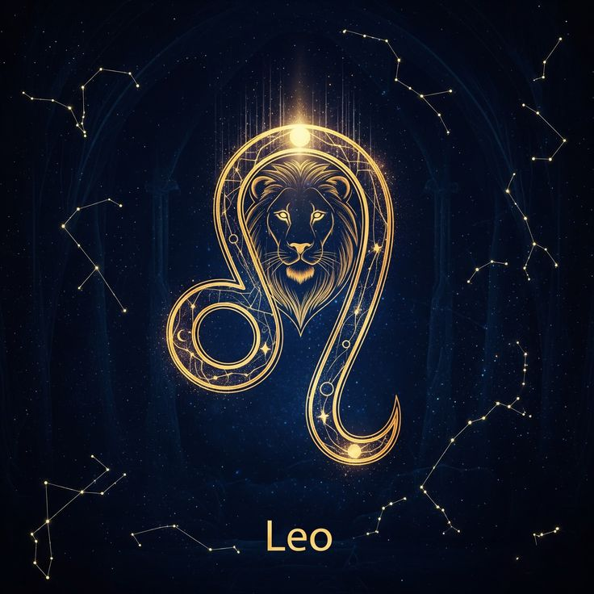
Leo es un signo de fuego asociado con la confianza y el liderazgo. Se caracteriza por su creatividad, generosidad y entusiasmo.
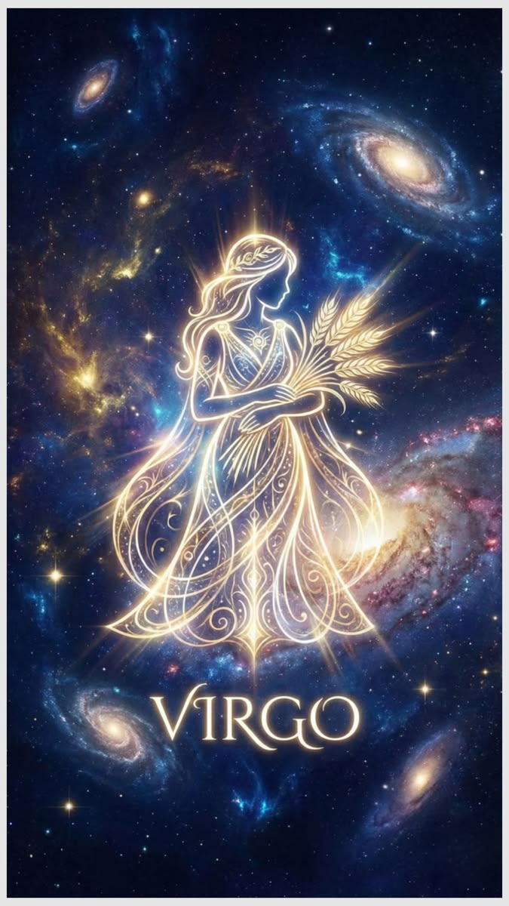
Virgo es un signo de tierra relacionado con la organización y la responsabilidad. Le gusta cuidar los detalles y resolver problemas.
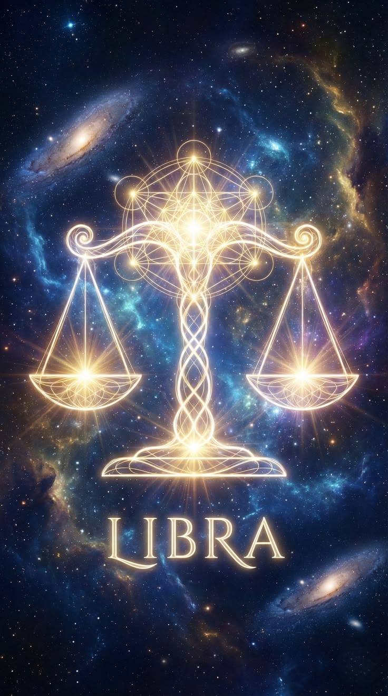
Libra es un signo de aire que representa la justicia y la armonía. Busca mantener buenas relaciones y resolver conflictos pacíficamente.
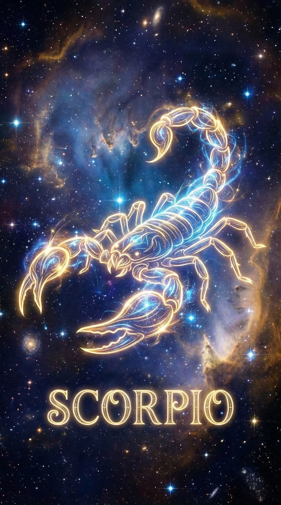
Escorpio es un signo de agua que se relaciona con la intensidad y la determinación. Valora la lealtad y la confianza en sus relaciones.
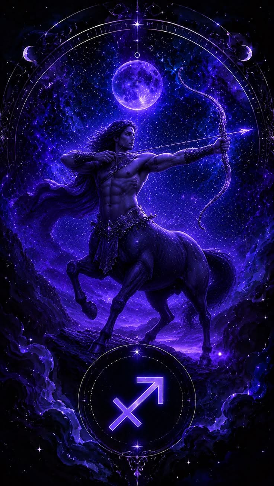
Sagitario es un signo de fuego que representa la aventura y la libertad. Disfruta explorar lugares nuevos y vivir experiencias diferentes.
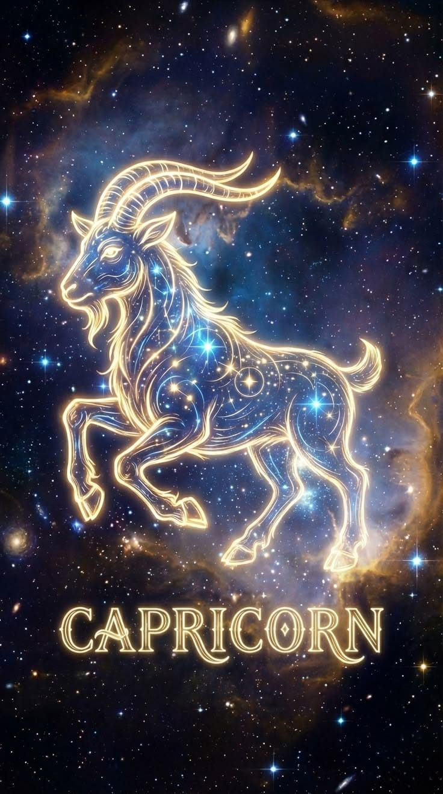
Capricornio es un signo de tierra asociado con la disciplina y la ambición. Se esfuerza por cumplir sus objetivos y alcanzar sus metas.
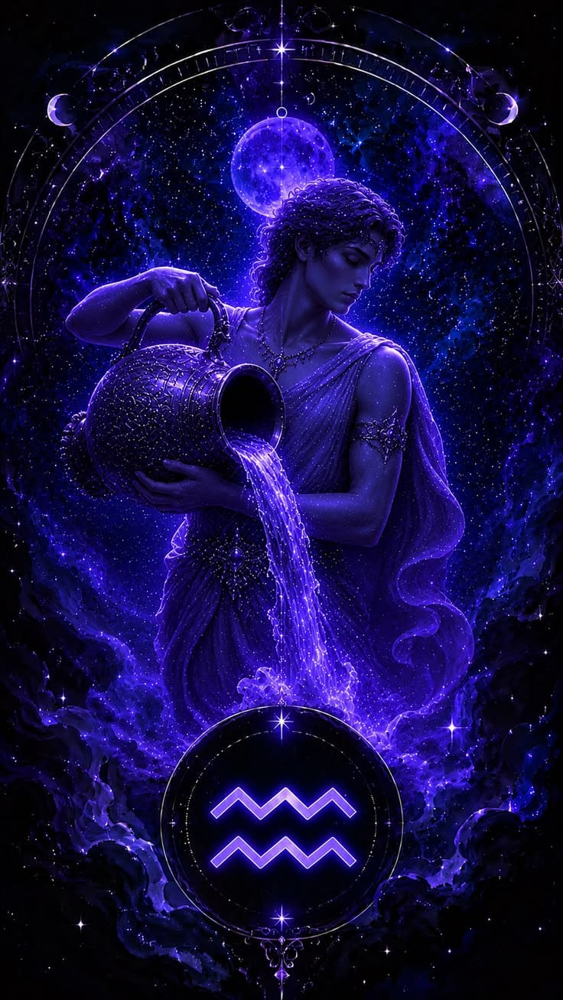
Acuario es un signo de aire relacionado con la originalidad y la independencia. Destaca por sus ideas creativas y su interés por la innovación.
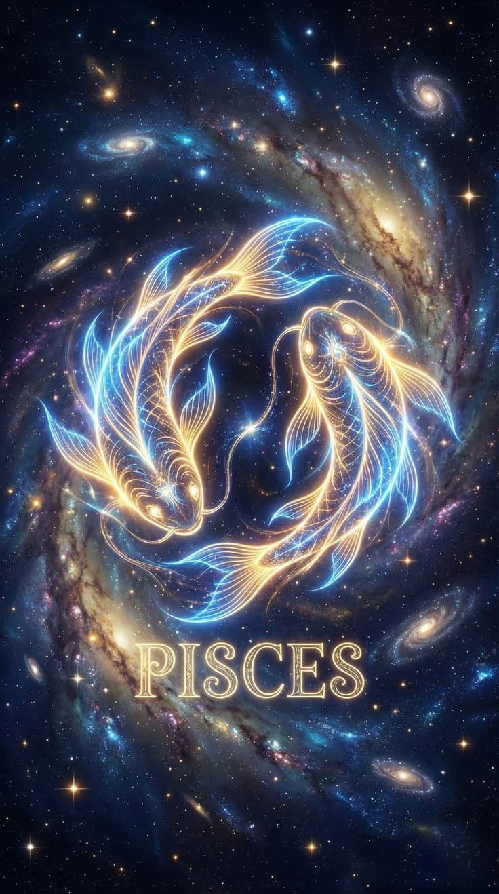
Piscis es un signo de agua que representa la imaginación y la sensibilidad. Se relaciona con la empatía, los sueños y la creatividad.